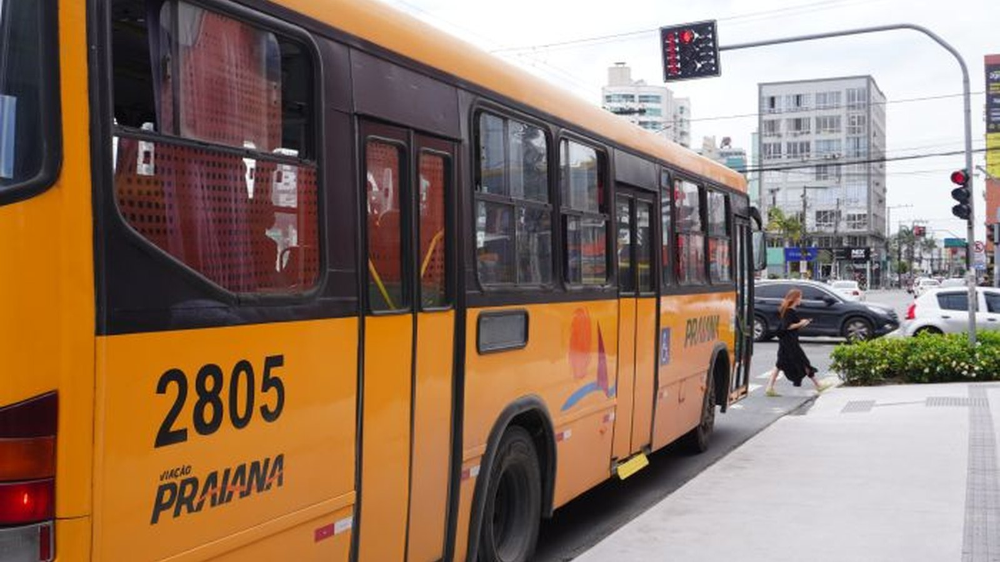

Itapema · Poder Público
Itapema · Poder PúblicoItapema prevê receita de R$ 954,3 milhões em 2027, e a Prefeitura escreve que o salto de 18,3% vem do empréstimo que banca o alargamento da praia
De onde sai o dinheiro que paga esse tipo de subsídio.
A Câmara aprovou por 12 votos a 0 o repasse de R$ 906 mil à Viação Praiana, referente ao exercício de 2025. É o mesmo valor aprovado em abril de 2024, quando teve um voto contrário e uma abstenção. Fomos à íntegra do projeto e achamos o artigo 6º, que a nota oficial não cita: ele obriga a Prefeitura a estudar a política tarifária do transporte coletivo, incluindo a eventual implantação de tarifa zero.
Em 30 segundos · Modo de Leitura, formato original Santa Informa
Itapema vai repassar R$ 906 mil à Viação Praiana.
Ela é a concessionária do ônibus da cidade.
O dinheiro é do exercício de 2025.
É o Projeto de Lei 417/2026.
Foi aprovado em 1º de setembro.
Placar: 12 a 0, sem abstenção.
Em 2024 o valor foi o mesmo.
Naquela vez teve 1 contra e 1 abstenção.
O pagamento sai em até 4 parcelas.
A empresa presta contas em 30 dias.
Se não prestar, a parcela seguinte trava.
O artigo 6º é o que ninguém citou.
Ele manda a Prefeitura estudar a tarifa.
Inclusive a tarifa zero.
O projeto não põe prazo nesse estudo.
A lei ainda não foi sancionada.
Foi ao prefeito em 4 de setembro.
A justificativa cita 237 municípios que subsidiam.
Florianópolis gastou R$ 118,5 milhões em 2024.
Poder PúblicoPublicada em Redação Santa Informa

A Câmara de Itapema divulgou nesta quinta, 10 de setembro, que aprovou o Projeto de Lei 417/2026, que institui um subsídio de R$ 906 mil à Viação Praiana, concessionária do transporte coletivo da cidade. O dinheiro é referente ao exercício de 2025. A votação foi em 1º de setembro e terminou 12 a 0, sem voto contrário, sem abstenção e sem ausência. Fomos ao sistema de proposições da Câmara e à íntegra do projeto. Ali estão dois dados que a nota não conta: o valor é idêntico ao de 2024, e o texto manda estudar tarifa zero.
O subsídio vai para a Viação Praiana Ltda, de CNPJ 84.297.217/0001-03, e serve, nas palavras do projeto, para manter o equilíbrio econômico-financeiro da concessão sem mexer na passagem. O pagamento sai em até quatro parcelas mensais, conforme o caixa do município. A cada parcela recebida, a empresa tem 30 dias para prestar contas à Assessoria Especial de Regulação e Controle, com demonstrativos financeiros. Se não prestar, a parcela seguinte fica suspensa. O projeto ainda determina que benefício dado à empresa por outro ente público entra na conta de uma revisão futura.
Em abril de 2024 a Prefeitura mandou à Câmara o Projeto de Lei 13/2024, que juntava subsídio e reajuste de tarifa (circular a R$ 5,00, seletivo a R$ 6,00). Um vereador pediu votação em destaque do artigo do reajuste, o plenário parou e o projeto saiu de pauta. O Executivo então retirou o texto e protocolou o Projeto de Lei 43/2024, só com o subsídio, no valor de R$ 906 mil. Ele foi aprovado em 10 de abril de 2024, com um voto contrário e uma abstenção. Em contrapartida, a empresa se comprometeu a não reajustar a tarifa. Dois anos e meio depois, o valor voltou igual, e desta vez ninguém votou contra.
O artigo 6º do projeto de 2026 diz que a Administração Municipal realizará estudos técnicos e econômico-financeiros voltados à avaliação da política tarifária do transporte coletivo municipal, incluindo a eventual implementação de tarifa zero ou novos mecanismos de subsídio para os exercícios futuros. O texto não fixa prazo para esse estudo, não diz quem faz e não manda publicar o resultado.
A justificativa assinada pelo prefeito Carlos Alexandre de Souza Ribeiro usa dados da NTU, a associação das empresas de transporte urbano: antes da pandemia só três grandes cidades subsidiavam o sistema, e hoje passam de 237 municípios, com mais de R$ 12 bilhões por ano no país. O documento cita Florianópolis, com R$ 118,5 milhões em 2024, e Blumenau, com R$ 41,3 milhões no mesmo ano. Os R$ 906 mil de Itapema são menos de 1% do que a capital gastou.
O resumo de 30 segundos está no topo e a versão completa é o texto acima. Aqui ficam as três leituras da casa sobre o mesmo assunto.
Clara, a otimista
O melhor do projeto não é o cheque, é o artigo 6º. Colocar tarifa zero por escrito numa lei municipal, mesmo como estudo, muda o assunto de lugar. Até ontem a conversa em Itapema era subsídio ou aumento de passagem. Agora existe uma terceira porta, e ela está no texto que os doze vereadores assinaram.
Também vale reparar no controle. Prestação de contas em 30 dias, parcela seguinte travada se a empresa não entregar, e revisão do valor se o custo cair. Não é o desenho de quem entrega dinheiro e vira as costas.
Seu Prudêncio, o criterioso
Merece atenção o valor repetido. Em 2024 foram R$ 906 mil, em 2026 são R$ 906 mil de novo. Dois exercícios diferentes, custos diferentes, e o mesmo número redondo. Vale acompanhar qual planilha sustenta essa cifra, porque subsídio calculado por passageiro transportado ou por quilômetro rodado costuma variar de um ano para o outro.
O prazo também pede olho. O dinheiro é do exercício de 2025 e a lei está sendo aprovada em setembro de 2026. Despesa que atrasa um ano inteiro embaralha a leitura do balanço e complica a vida de quem opera.
Uma sugestão útil: quando o estudo do artigo 6º ficar pronto, publicar o custo por passageiro e o número de viagens. É o dado que falta para qualquer conversa séria sobre tarifa nesta cidade. Dito isso, o projeto é honesto no que se propõe. Ele diz de onde vem o dinheiro, para que serve, como se presta contas e o que acontece se não prestar. E abre a porta do estudo tarifário, que é a parte que interessa daqui para a frente.
Caco, o sarcástico
Doze a zero. Nem no Parasurf, nem no Dia Municipal do Chimarrão a Câmara chega a essa unanimidade tão rápido. Dinheiro para ônibus, ao que parece, é o assunto mais pacífico de Itapema.
Em 2024 o valor era R$ 906 mil. Em 2026, R$ 906 mil. A inflação passou por aqui, olhou a planilha e decidiu não incomodar.
Reclamar mesmo, só do artigo 6º. Ele manda estudar tarifa zero e esquece de dizer quando. É como prometer que vai começar a academia: tecnicamente verdade, cronologicamente flexível. Mas está no papel, e papel em Itapema tem sido melhor que promessa de palanque.
Fontes: a aprovação do Projeto de Lei 417/2026, o valor de R$ 906 mil, o pagamento em até quatro parcelas, a prestação de contas em 30 dias e o Requerimento 518/2026 da vereadora Lorita Montagner estão na notícia publicada pela Câmara de Itapema em 10 de setembro de 2026. A data de entrada em 15 de junho, o placar de 12 votos a 0 na 27ª Sessão Ordinária de 1º de setembro, os nomes dos vereadores, os pareceres favoráveis das duas comissões, o envio ao Executivo em 4 de setembro e a situação ainda registrada como aprovada estão na ficha da proposição no sistema da Câmara. O texto do artigo 6º sobre tarifa zero, o CNPJ da empresa, a regra de suspensão das parcelas, os dados da NTU sobre 237 municípios e R$ 12 bilhões e os exemplos de Florianópolis e Blumenau saem da íntegra do projeto e da Mensagem 029/2026, assinada pelo prefeito, que lemos por inteiro. O episódio de 2024, com o Projeto de Lei 13/2024 retirado de pauta, a tarifa proposta de R$ 5,00 no circular e R$ 6,00 no seletivo e o compromisso de não reajustar, está na reportagem da Câmara de 8 de abril de 2024, e a aprovação do Projeto de Lei 43/2024 com um voto contrário e uma abstenção está na nota da Câmara de 11 de abril de 2024. Já contamos aqui o orçamento que Itapema projeta para 2027 e a fila de projetos parados na Câmara.
Itapema · Poder PúblicoDe onde sai o dinheiro que paga esse tipo de subsídio.
Como funciona o plenário que aprovou este repasse.
 Itapema · Poder Público
Itapema · Poder PúblicoLevantamento nosso no mesmo sistema que abriu esta matéria.